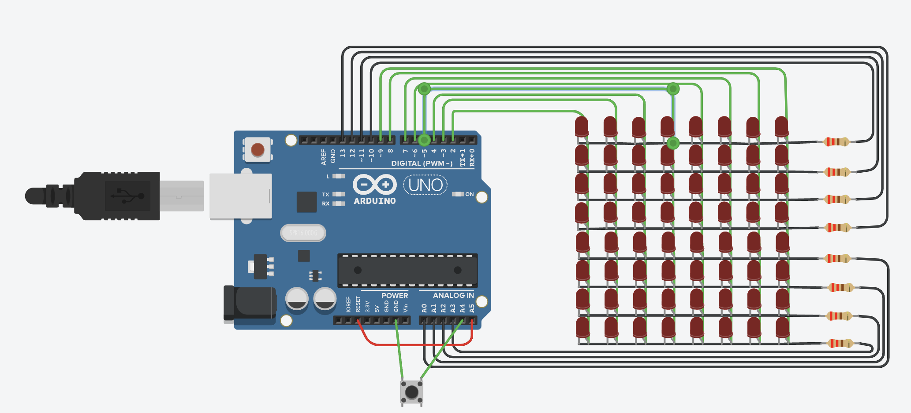

The idea behind this project was to build the arcade game Stacker on an 8x8 LED matrix. In the original game, one aligns moving rows of lights on top of each other- and in our version, 8 rows of stacked lights results in a victory.
We decided to build this game after a lengthy brainstorming processes. Other candidates included Pong, Snake, Flappy Bird, Tetris, some type of rhythm game, Frogger, and Space Defender.
We ultimately chose Stacker because it would translate the best to the LED matrix, allow us to experiment with Arduino code, and give us an opportunity to use the 3D printing facilities on campus.
The materials used to build this project are listed in the image and table below.
| Part | Description of the Part's Role | Total Price | Count |
|---|---|---|---|
| 400 Point Solderless Breadboard | Enables project component connections | $7.49 | 2 |
| Arduino Uno Rev3 | Computer that connects to the hardware | $27.60 | 1 |
| Tactile Switch Buttons | Controls the game | $2.50 | 1 |
| LED Matrix 8x8 | Displays the light rows | $3.56 | 1 |
| 470 Ohm Resistor | Limits the flow of electrical current | $0.75 | 8 |
| Breadboarding Wire | Connects arduino to breadboard | $4.95 | 33 |
| USB 2.0 Cable Type A/B | Enables upload of code from computer to arduino | $7.60 | 1 |
| Total Price | $54.45 | ||

While we didn’t make any circuit diagrams before we started wiring the matrix, we did draw a few sketches for what the faceplate should look like and the components that would be contained inside of it. We also sketched out what the win and lose animations would look like.
To decide what game we would make, we scheduled a room in the library, locked ourselves in for half and hour, listed as many simple games as we could. After that, we went through the list and picked out the best candidates for our project- they were the ones listed above in the overview. We finally settled on Stacker and are pleased with quality of our final product.
We also spent some time brainstorming “inventive input” for the project. Because we’re doing an arcade game, we though about gluing an amiibo to the button, and then we considered gluing a miniature pikachu figure to it. We ended up settling on gluing a tiny pinecone to the button, which went with the fun and playful spirit of the project.
Before sending the box STL off to the 3D printer, we made a prototype faceplate using a pasta box. We then measured all of the space between the windows required for the LED matrix and the button. Unfortunately, we reflected the model when we made the STL, which meant that the faceplate didn’t exactly fit.
We experienced multiple challenges in the building of this project including:
In the future, we would like to explore using shift registers to add two colors to the game. If we could solve this issue, we could have the loss animation display as red instead of green, or the active row display as red instead of green. Further, we would re-measure the spaces between the buttons and LED matrix to ensure that the faceplate could fit onto the front of the game, and add a notch on the side for the cord to fit into. We would also see if adding shift registers freed up enough pins to add the piezo buzzer as a speaker- we wanted to explore that in this iteration, but ran out of pins.
We learned a lot in the process of making this project! We specifically learned how to wire an LED matrix, we became more confident in wiring complex circuits, and we learned a lot on the coding side, especially when it comes to coding Arduino. Further, it was fun to set a goal and work towards it- because Stacker is an established game, the goals for our project were very clear. In this first project, having explicit milestones to work towards helped a lot.
We honestly only used a tiny bit of code from the internet. Most of our ideas about how this project should work were scraped together from multiple webpages and our existing knowledge. This website, however, had a small amount of useful code for our end product: (1)
Further, we'd like to thank Jacob Malloy for his contributions on the code. He introduced us to the idea of bitshifting and helped walk us through it.